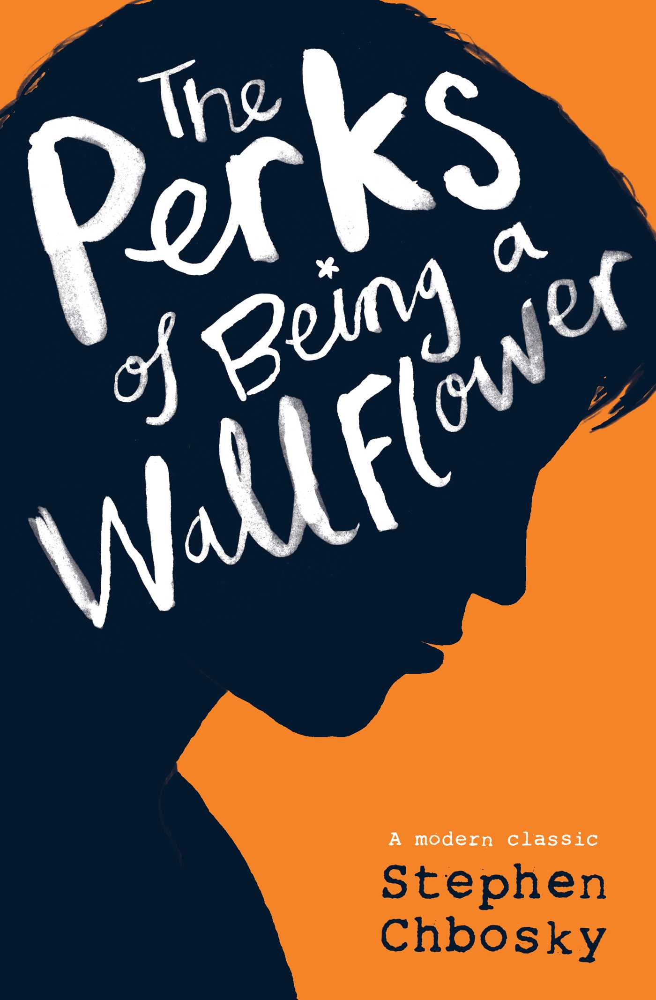

Despite the tumor-shrinking medical miracle that has bought her a few years, Hazel has never
been anything but terminal, her final chapter inscribed upon diagnosis. But when a gorgeous
plot twist named Augustus Waters suddenly appears at Cancer Kid Support Group, Hazel's story
is about to be completely rewritten.
The Book Thief
Author: Markus Zusak
Originally published: September 1, 2005
It is 1939. Nazi Germany. The country is holding its breath. Death has never been busier, and will be busier still.
By her brother's graveside, Liesel's life is changed when she picks up a single object, partially hidden in the snow. It is The Gravedigger's Handbook, left behind there by accident, and it is her first act of book thievery. So begins a love affair with books and words, as Liesel, with the help of her accordian-playing foster father, learns to read. Soon she is stealing books from Nazi book-burnings, the mayor's wife's library, wherever there are books to be found.
But these are dangerous times. When Liesel's foster family hides a Jew in their basement, Liesel's world is both opened up, and closed down.
In superbly crafted writing that burns with intensity, award-winning author Markus Zusak has given us one of the most enduring stories of our time.

The Perks of Being A Wallflower
Author: Stephen Chbosky
Originally published: September 20, 2012
This is the story of what it's like to grow up in high school. More intimate than a diary, Charlie's letters are singular and unique, hilarious and devastating. We may not know where he lives. We may not know to whom he is writing. All we know is the world he shares. Caught between trying to live his life and trying to run from it puts him on a strange course through uncharted territory. The world of first dates and mixed tapes, family dramas and new friends. The world of sex, drugs, and The Rocky Horror Picture Show, when all one requires is that the perfect song on that perfect drive to feel infinite.
The Hunger Games
Author: Suzanne Collins
Originally published: September 14, 2008
In the ruins of a place once known as North America lies the nation of Panem, a shining Capitol surrounded by twelve outlying districts. The Capitol is harsh and cruel and keeps the districts in line by forcing them all to send one boy and once girl between the ages of twelve and eighteen to participate in the annual Hunger Games, a fight to the death on live TV.
Sixteen-year-old Katniss Everdeen regards it as a death sentence when she steps forward to take her sister's place in the Games. But Katniss has been close to dead before—and survival, for her, is second nature. Without really meaning to, she becomes a contender. But if she is to win, she will have to start making choices that weight survival against humanity and life against love.